FBA (FinalBurn Alpha)
50 juegos probados en la bartop
Género
Jugadores
Década
50 juegos
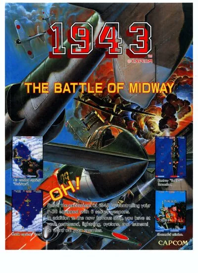
1943: The Battle of Midway Aero Fighters
Aero Fighters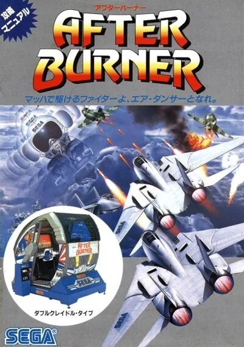
After Burner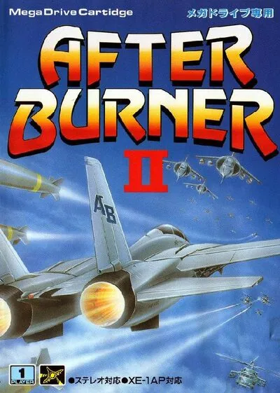
After Burner II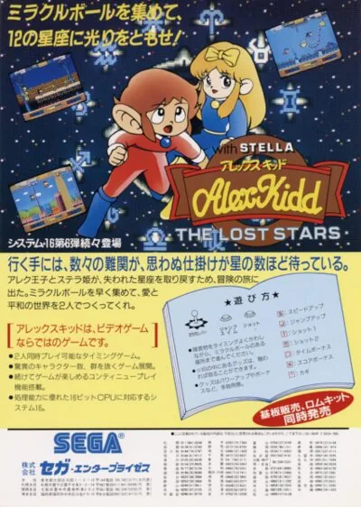
Alex Kidd: The Lost Stars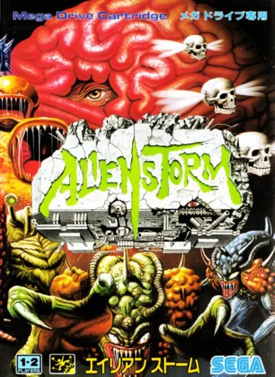
Alien Storm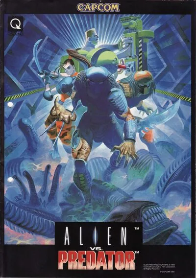
Alien vs. Predator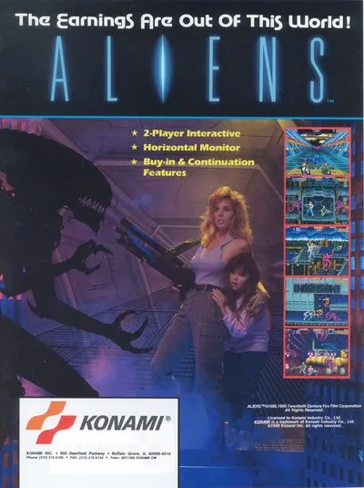
Aliens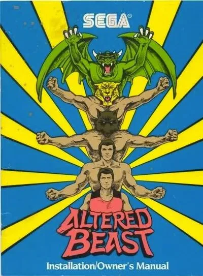
Altered Beast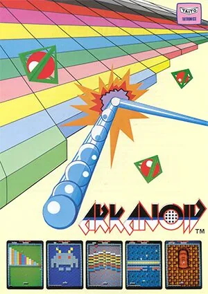
Arkanoid Arkanoid - Revenge of DOH
Arkanoid - Revenge of DOH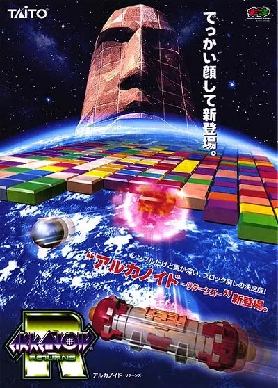
Arkanoid Returns Asterix
Asterix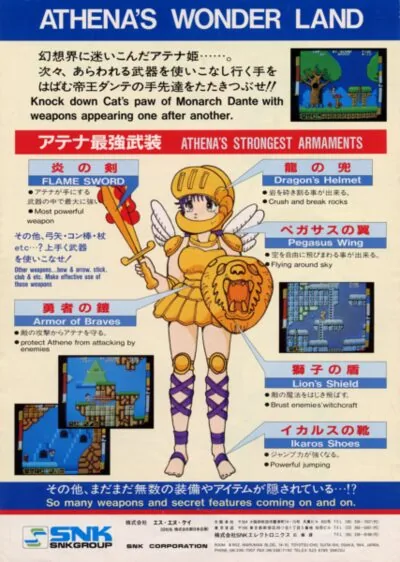
Athena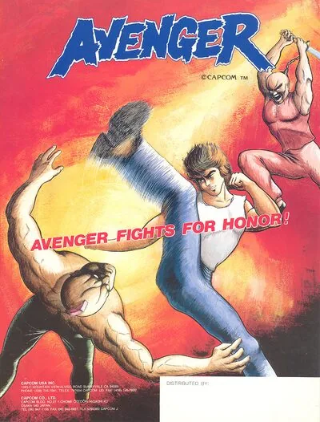
Avengers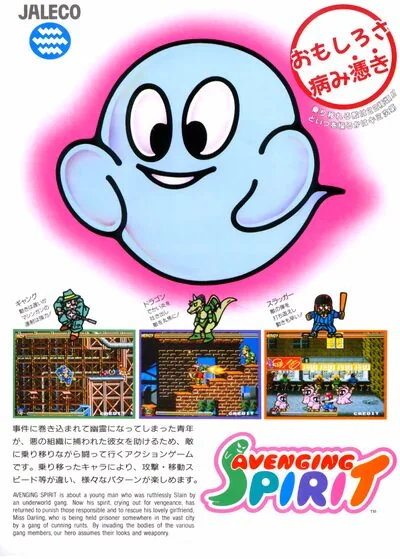
Avenging Spirit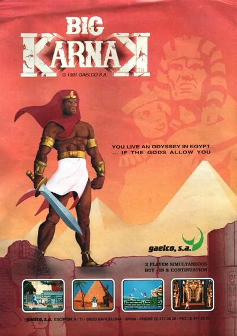
Big Karnak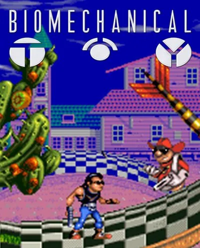
Biomechanical Toy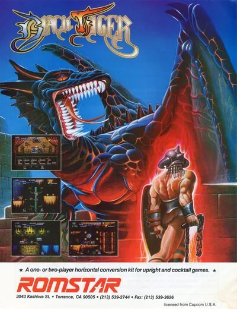
Black Tiger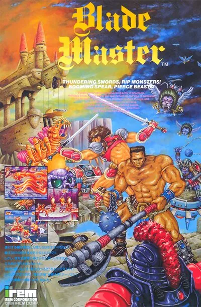
Blade Master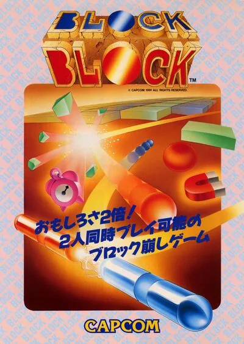
Block Block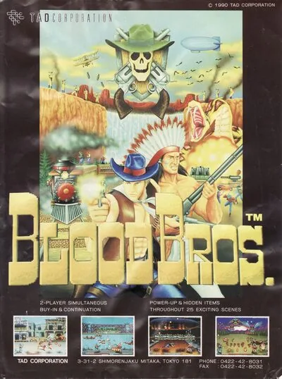
Blood Bros.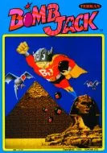
Bomb Jack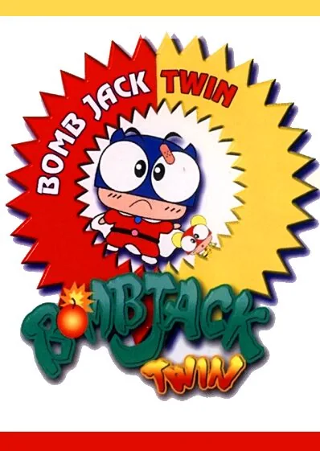
Bombjack Twin Bubble Bobble
Bubble Bobble Bubble Bobble II
Bubble Bobble II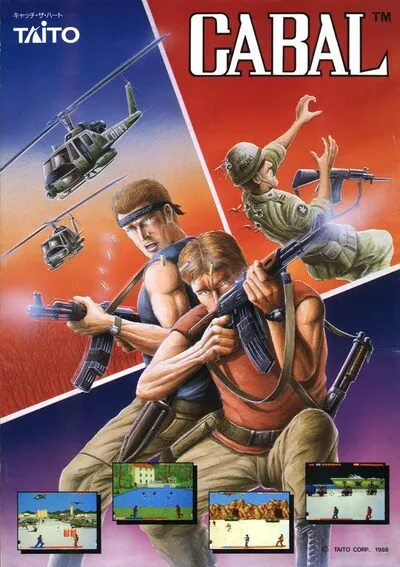
Cabal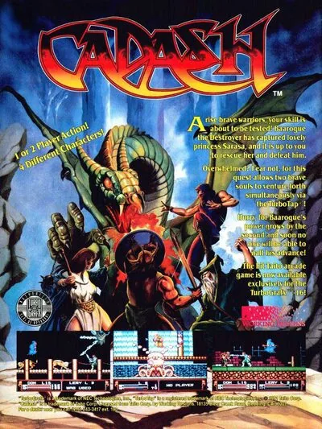
Cadash Cadillacs and Dinosaurs
Cadillacs and Dinosaurs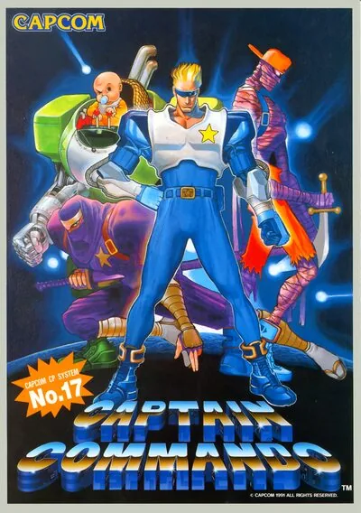
Captain Commando Caveman Ninja
Caveman Ninja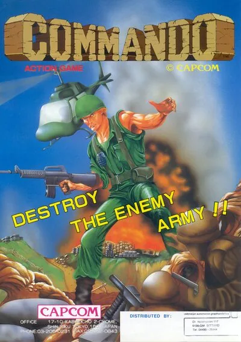
Commando Contra
Contra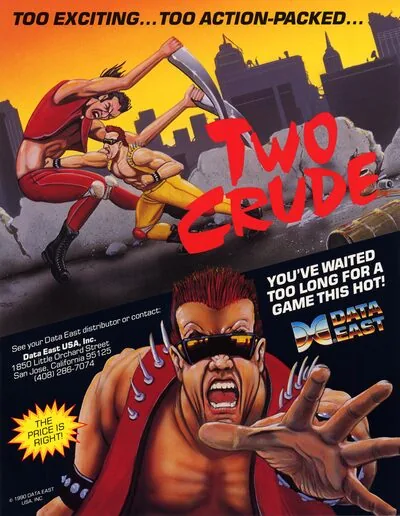
Crude Buster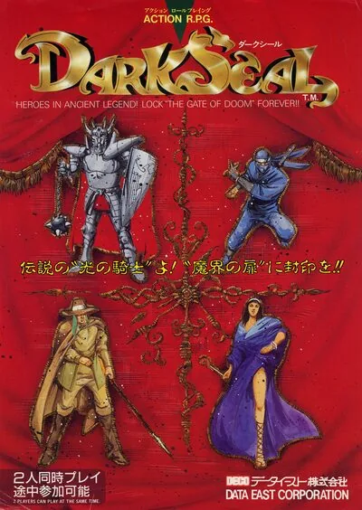
Dark Seal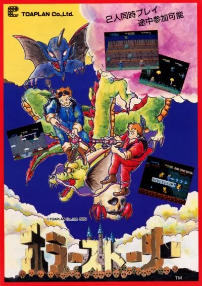
Demon's World / Horror Story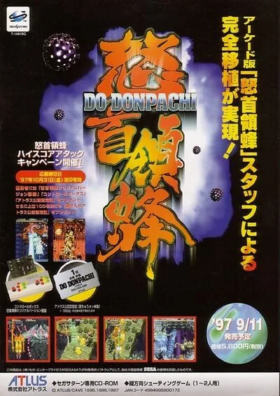
DoDonPachi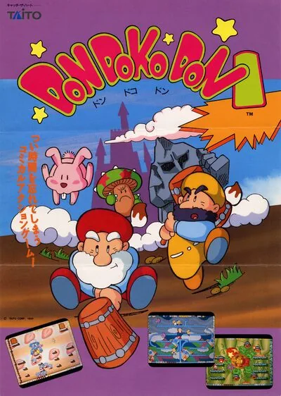
Don Doko Don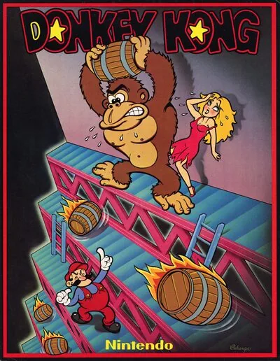
Donkey Kong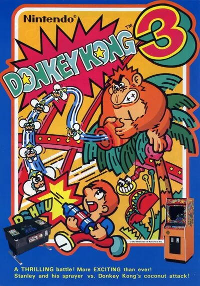
Donkey Kong 3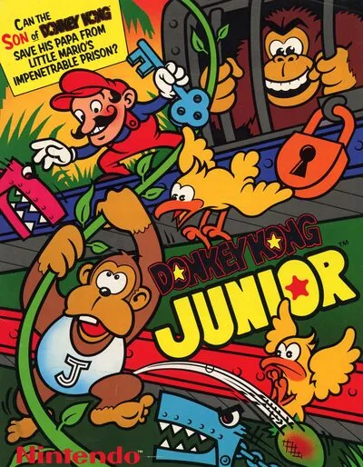
Donkey Kong II - Jumpman Returns Double Dragon
Double Dragon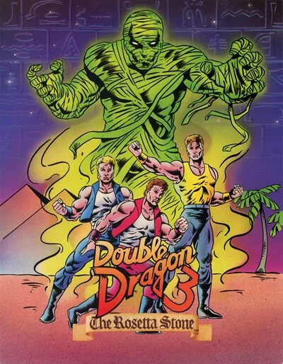
Double Dragon 3 - The Rosetta Stone Double Dragon II - The Revenge
Double Dragon II - The Revenge Dragon Breed
Dragon Breed Dragon Saber
Dragon Saber Dragon Spirit
Dragon Spirit Dungeons & Dragons: Shadow over Mystara
Dungeons & Dragons: Shadow over Mystara Dungeons & Dragons: Tower of Doom
Dungeons & Dragons: Tower of Doom Dynamite Düx
Dynamite Düx
No hay juegos con esos filtros.